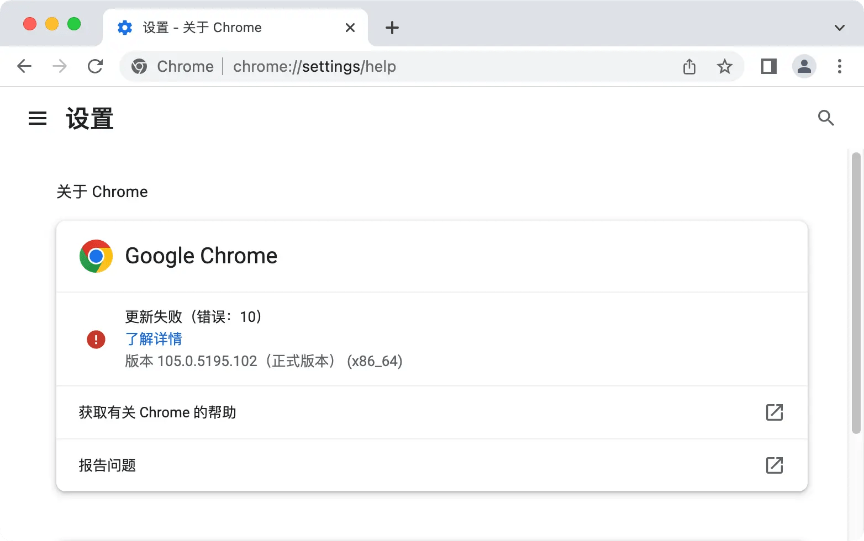

请访问原文链接：如何禁用 Google Chrome 自动更新 (macOS, Linux, Windows) 查看最新版。原创作品，转载请保留出处。
作者主页：sysin.org
禁用浏览器自动更新系列文章：
- 如何禁用 Firefox 自动更新 (macOS, Linux, Windows)
- 如何禁用 Google Chrome 自动更新 (macOS, Linux, Windows)
- 如何禁用 Microsoft Edge 自动更新 (Windows, Linux, macOS)
不同于 Firefox 官方提供了禁用自动更新的配置功能，Google Chrome 及基于其开源版本 Chromium 实现的衍生浏览器【国外各种（Microsoft Edge 等），国产各种…】不仅没有禁用自动更新的配置，而且是强制自动更新如同病毒病毒肆虐一般难以控制，非常不尊重用户。即使我们使用变通方法屏蔽了自动更新，它们竟然还会不停的提示软件已经过期。
适用的版本：
本文写作时以 Chrome 88 版本为例，验证到 105 版本可用，不排除新版本将来可能有所变更。
如果方法失效，欢迎反馈，笔者将及时修正和更新，谢谢！
Google Chrome for Mac
Chrome for Mac 如何自动更新？
通过以下进程：
1 | ~/Library/Google/GoogleSoftwareUpdate/GoogleSoftwareUpdate.bundle/Contents/Helpers/GoogleSoftwareUpdateAgent.app |
访问 Google 相关域名检测并下载更新。
1 | tools.google.com #主要 (sysin) |
解决方案：
- 删除进程并禁止重新生成
- hosts 屏蔽相关域名
- 屏蔽进程网络访问
禁用自动更新一般步骤
(1) 删除和设置权限
打开终端执行如下命令：
1 | 删除更新程序 |
(2) 编辑 hosts 文件，添加如下内容：
手动编辑，打开终端，执行：sudo vi /etc/hosts，或者使用 SwitchHosts（免费软件），添加如下条目：
1 | 127.0.0.1 update.googleapis.com |
以上两步任意一个已经可以屏蔽自动更新，同时操作更加保险。
(3) 或者（或同时）使用防火墙软件屏蔽：
该项操作可选。
推荐 Little Snitch，这是一个商业软件。
分别新建规则，屏蔽以下进程访问网络：
1 | ~/Library/Google/GoogleSoftwareUpdate/GoogleSoftwareUpdate.bundle/Contents/Helpers/GoogleSoftwareUpdateAgent.app |
Process Name：上述进程名
Deny Outgoing Connections
To: Any Server
效果图：

部署策略
Chrome 使用 com.google.Keystone.plist 来控制更新，也可以通过 MDM 部署。
根据官方文档，如果不使用 MDM，则保存在 /Library/Managed Preferences/ 目录下，打开终端执行命令：
1 | sudo mkdir /Library/Managed\ Preferences |
不过单机测试无效！该方式仅限企业环境，个人用户请忽略。
Google Chrome for Linux
官方发行的 deb 和 rpm 包是不带更新功能的，通过第三方 repo 安装的 Chrome 通常会通过软件包管理进行更新。
通过软件包管理禁用自动更新
Linux 软件更新通常依赖于系统级别的包管理机制（例如 apt 和 yum），我们可以手动来控制是否更新。
Chrome 稳定版在 Linux 中的软件包名称为：google-chrome-stable
在 Debian 及衍生系统中禁用 Chrome 更新：
1 | sudo apt-mark hold google-chrome-stable |
在 Redhat 及衍生系统中禁用 Chrome 更新：
1 | echo 'exclude=google-chrome-stable' >> /etc/yum.conf |
通过策略禁用更新
以下直接引用官方文档，有兴趣可以自行测试。
Step 1: Turn off Chrome browser updates
To stop Chrome browser auto-updating, take one of the following actions:
- Create an empty repository before installing Chrome browser:
$ sudo touch /etc/default/google-chrome - Add the following line to /etc/default/google-chrome:
repo_add_once=false
Step 2: Turn off Chrome browser component updates (Optional)
Applies only to Chrome browser components.
Even if you turn off automatic updates for Chrome browser, browser components won’t automatically stop updating, including Widevine DRM (for encrypted media) and the Chrome updater recovery component. If you want to stop these components from updating, disable the Chrome ComponentUpdatesEnabled policy.
Using your preferred JSON file editor:
In your etc/opt/chrome/policies/managed folder, create a JSON file and name it component_update.json.
Add the following setting to the JSON file to turn off component updates:
1
2
3{
"ComponentUpdatesEnabled": "false"
}Deploy the update to your users.
Google Chrome for Windows
Chrome for Windows 如何自动更新？
本文写作时以 Chrome 88 版本为例，100 版本测试任务计划名称有所变化，现在已经验证到 105 版本可用，不排除新版本将来可能有所变更。
Chrome 在 Windows 平台同时发布三个个版本，分别是：
- 系统版（为所有用户安装）即 Windows System Setup，安装在
Program Files文件夹下，需要管理员权限安装； - 企业版与上述系统版安装路径和权限要求是一样的，区别在于不是 exe 文件而是 msi 格式的安装包，msi 格式可以用于组策略部署；
- 用户版即 Windows User Setup，安装在
Users文件夹下，不需要管理员权限，普通用户就可以安装。
用户版不带自动更新程序，解压后是一个 7z 文件，即绿色版。
1 | 用户版主程序安装路径： |
系统版或者企业版使用以下方法进行自动更新：
1 | 更新服务： |
根据上述路径，手动禁用或者删除即可禁用自动更新，即分别禁用或删除以下：
- 更新服务
- 任务计划
- 删除更新程序（整个 Update 文件夹）
使用 PowerShell 禁用更新
打开 Windows PowerShell 直接复制以下脚本运行一下更加方便：
或者将脚本保存为
disable-chrome-auto-update.ps1文件，右键点击 “使用 PowerShell 运行” 即可快速完成。
1 | if ([Environment]::Is64BitOperatingSystem -eq "True") { |
组策略配置更新（仅适用于域客户端）
下载 administrative template，通过组策略部署，该方式适合企业域管理员，不再赘述。
附录
相关下载
- Firefox 150, Chrome 150, Chromium 150 官网离线下载 (macOS, Linux, Windows)
- Apple Safari 26.6 - macOS 专属浏览器 (独立安装包下载)
- Apple Safari 18.6 - macOS 专属浏览器 (独立安装包下载)
- Apple Safari 17.6 - macOS 专属浏览器 (独立安装包下载)
- Apple Safari 16.5 - macOS 专属浏览器 (独立安装包下载)
相关文章：
- 如何屏蔽 iOS 软件自动更新，去除更新通知和标记
- 如何禁止 macOS 自动更新，去除更新标记和通知
- 如何禁止 Ubuntu 26.04 自动更新，删除更新提示和缓存
- 如何禁用 Firefox 自动更新 (macOS, Linux, Windows)
- 如何禁用 Google Chrome 自动更新 (macOS, Linux, Windows)
- 如何禁用 Microsoft Edge 自动更新 (Windows, Linux, macOS)

文章用于推荐和分享优秀的软件产品及其相关技术，所有软件默认提供官方原版（免费版或试用版），免费分享。对于部分产品笔者加入了自己的理解和分析，方便学习和研究使用。任何内容若侵犯了您的版权，请联系作者删除。如果您喜欢这篇文章或者觉得它对您有所帮助，或者发现有不当之处，欢迎您发表评论，也欢迎您分享这个网站，或者赞赏一下作者，谢谢！
 支付宝赞赏
支付宝赞赏  微信赞赏
微信赞赏赞赏一下
敬请注册！点击 “登录” - “用户注册”（已知不支持 21.cn/189.cn 邮箱）。 请勿使用联合登录（已关闭）。